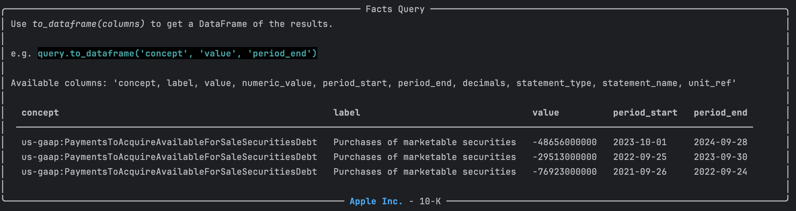

XBRL Query Functionality
You can query the facts inside an XBRL instance using the XBRL query API. This allows you to get access to specific financial data, filter results and perform analysis on the financial facts contained within a single XBRL filing.
Overview
XBRL query functionality is built around two main classes:
- FactsView - Provides access to raw XBRL facts from a single filing
- FactQuery - Enables complex filtering and analysis of those facts
Basic Usage
Accessing Facts
from edgar import *
from edgar.xbrl import XBRL
# Get an XBRL filing
company = Company("AAPL")
filing = company.latest("10-K")
xb = filing.xbrl()
Access the facts view
The FactsView provides direct access to the facts in the XBRL instance:
facts = xb.facts
print(f"Total facts: {len(facts)}")
Querying Facts
To query facts use the query() method on the XBRL instance and one of the by_ functions e.g. by_text(). This returns a FactQuery object that allows you to filter and manipulate the facts.
# Start a query
results = (xb.query()
.by_concept("us-gaap:PaymentsToAcquireAvailableForSaleSecuritiesDebt")
)

The result is an edgar.xbrl.facts.FactQuery object that contains the filtered facts. You can see from the rich display the available columns of whichg a few are selected by default.
You can also convert the results to a DataFrame for easier manipulation including selecting which columns you want to view:
df = results.to_dataframe('concept', 'label', 'value', 'period_end')
Filtering Facts
By Concept
You can filter facts by their concept names, which are unique identifiers for financial data items in XBRL.
# Find revenue-related facts
revenue_query = xb.query().by_concept("us-gaap:Revenues")
The namespace e.g. us-gaap: is optional, so you can use just the concept name like Revenues.
Querying by concept does a partial regex match on the concept name
by_concept('RevenueFrom') matches us-gaap:RevenueFromContractWithCustomerExcludingAssessedTax and us-gaap:RevenueFromContractWithCustomerTextBlock
Use exact=True to match the full concept name exactly.
By Label
You can filter facts by their labels, which are human-readable names associated with the concepts.
# Search by label text
revenue_query = xb.query().by_label("Revenue")
To specify exact matches or partial matches, use the exact parameter:
sales_query = xb.query().by_label("Revenue", exact=False)
By Value
# Facts with values above $1 billion
large_values = xb.query().by_value(lambda x: x > 1_000_000_000)
# Facts within a range
range_query = xb.query().by_value(lambda x: 100_000 <= x <= 1_000_000)
By Statement Type
# Facts from specific statements
income_facts = xb.query().by_statement_type("IncomeStatement")
balance_facts = xb.query().by_statement_type("BalanceSheet")
Method Chaining
Combine multiple filters using method chaining:
# Complex query with multiple filters
complex_query = (xbrl.query()
.by_statement("IncomeStatement")
.by_label("Revenue")
.by_value(lambda x: x > 1_000_000)
.sort_by('value', ascending=False)
.limit(10))
results = complex_query.execute()
Data Transformations
Sorting
# Sort by value (descending)
sorted_query = xbrl.query().sort_by('value', ascending=False)
# Sort by concept name
concept_sorted = xbrl.query().sort_by('concept')
Limiting Results
# Get top 10 results
top_10 = xbrl.query().limit(10)
# Pagination
page_1 = xbrl.query().limit(20)
page_2 = xbrl.query().offset(20).limit(20)
Working with Results
DataFrame Output
# Get specific columns
df = query.to_dataframe('concept', 'label', 'value', 'period_end')
# All available columns
full_df = query.to_dataframe()
# Column information
print("Available columns:", df.columns.tolist())
Fact Structure
Each fact contains the following key information:
fact = results[0]
print(f"Concept: {fact['concept']}")
print(f"Label: {fact['label']}")
print(f"Value: {fact['value']}")
print(f"Period: {fact['period_end']}")
print(f"Units: {fact['units']}")
print(f"Decimals: {fact['decimals']}")
Advanced Filtering
Dimensions
# Facts with specific dimensions
dimensional_query = xbrl.query().by_dimension("ProductOrServiceAxis", "ProductMember")
# Facts with any value for a dimension
any_product_dim = xbrl.query().by_dimension("ProductOrServiceAxis")
# Facts with NO dimensions (undimensioned facts)
undimensioned_facts = xbrl.query().by_dimension(None)
# Multiple dimensions
multi_dim = xbrl.query().by_dimensions({
"ProductOrServiceAxis": "ProductMember",
"GeographyAxis": "USMember"
})
Performance Tips
- Use specific filters: Filter early to reduce data processing
- Limit results: Use
.limit()for large datasets - Cache queries: Store frequently used queries
- Select columns: Use
to_dataframe()with specific columns
# Efficient query pattern
efficient_query = (xb.query()
.by_statement("IncomeStatement") # Filter first
.by_value(lambda x: x > 0) # Remove zeros
.limit(100) # Limit results
.to_dataframe('concept', 'value')) # Select columns
Examples
Finding Revenue Information
# All revenue-related facts
revenue_facts = (xb.query()
.by_label("revenue", exact=False)
.sort_by('value', ascending=False)
.execute())
for fact in revenue_facts:
print(f"{fact['label']}: ${fact['value']:,}")
Comparing Quarterly Data
# Get quarterly revenue data
quarterly_revenue = (xb.query()
.by_concept("us-gaap:Revenues")
.by_period_type("duration")
.sort_by('period_end')
.to_dataframe('period_end', 'value'))
print(quarterly_revenue)
Balance Sheet Analysis
# Major balance sheet items
balance_items = (xb.query()
.by_statement("BalanceSheet")
.by_value(lambda x: x > 1_000_000_000) # > $1B
.sort_by('value', ascending=False)
.to_dataframe('label', 'value'))
print("Major Balance Sheet Items (> $1B):")
print(balance_items)
This query system provides a flexible and powerful way to explore XBRL data, enabling detailed financial analysis and data extraction from individual filings.